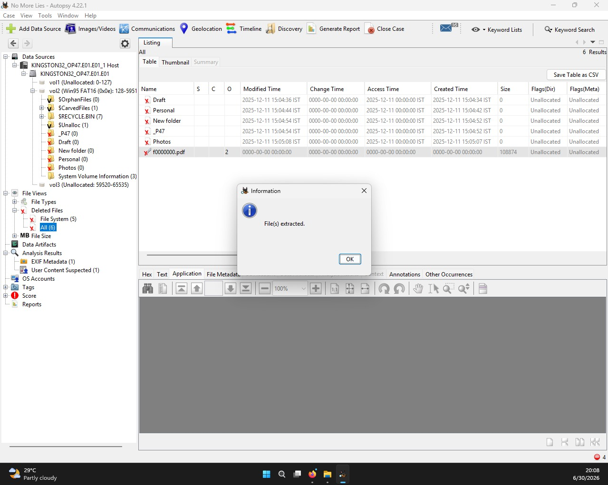
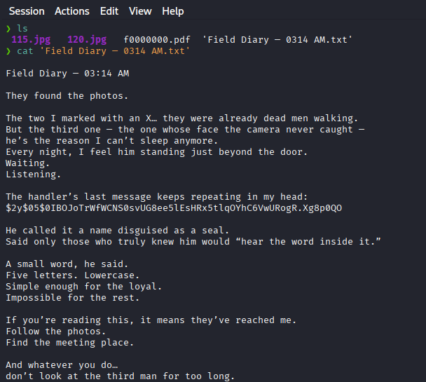
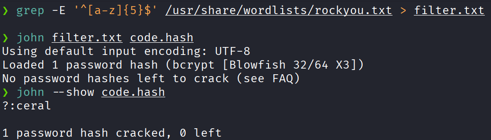
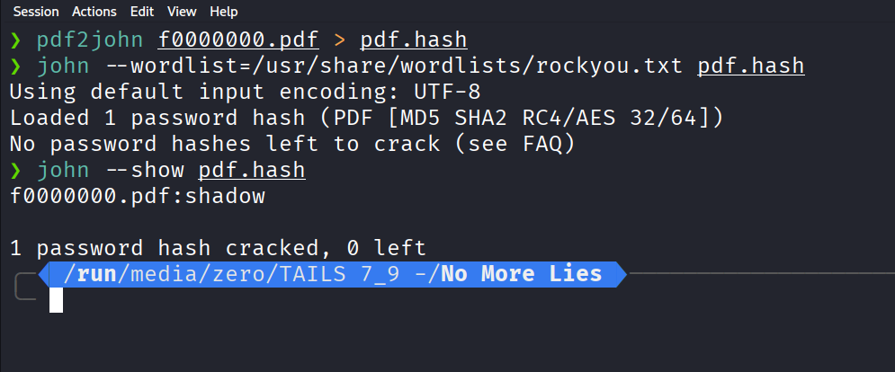
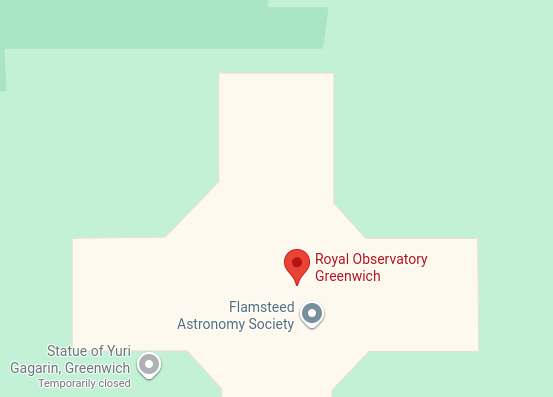

A Medium-Level Digital Forensics Challenge
Disk Analysis • Hash Cracking • OSINT • Metadata Investigation
A mysterious case lands on your desk. During the initial crime-scene sweep, investigators discovered a pen drive inside the victim’s pocket — the only lead in an otherwise silent room.
You are provided with a forensic disk image (E01) of the pen drive. Your mission is to analyze the evidence, recover deleted artifacts, crack hidden secrets, and uncover the truth.
Forensic analysis of the E01 disk image and recovery of deleted files.
Used for hash analysis and cracking validation.
Used to crack bcrypt and extract PDF password hashes.
Extracted metadata including GPS coordinates from images.
Identified real-world location using recovered GPS metadata.
The E01 forensic image was loaded into Autopsy and indexed for analysis.

The deleted file Field Diary — 0314 AM.txt was recovered.
$2y$05$0IBOJoTrWfWCNS0svUG8ee5lEsHRx5tlqOYhC6VwURogR.Xg8p0QO
Hint discovered: Five lowercase letters. A name disguised as a seal.

echo '$2y$05$0IBOJoTrWfWCNS0svUG8ee5lEsHRx5tlqOYhC6VwURogR.Xg8p0QO' > code.hash
grep -E '^[a-z]{5}$' /usr/share/wordlists/rockyou.txt > filter.txt
john --wordlist=filter.txt code.hash
john --show code.hash
Handler's message revealed during investigation.

pdf2john recovered.pdf > pdf_hash.txt
john pdf_hash.txt --wordlist=rockyou.txt
Recovered fallback trigger phrase from decrypted document.

exiftool image.jpg
51°28'36.84"N 0°0'1.80"W

Handler's Last Message: ceral
Recovered PDF Flag: THM{NIGHT_FALL}
Meeting Location: Royal Observatory Greenwich
Generate and download the complete report as a PDF.